Flowers in the cemetery
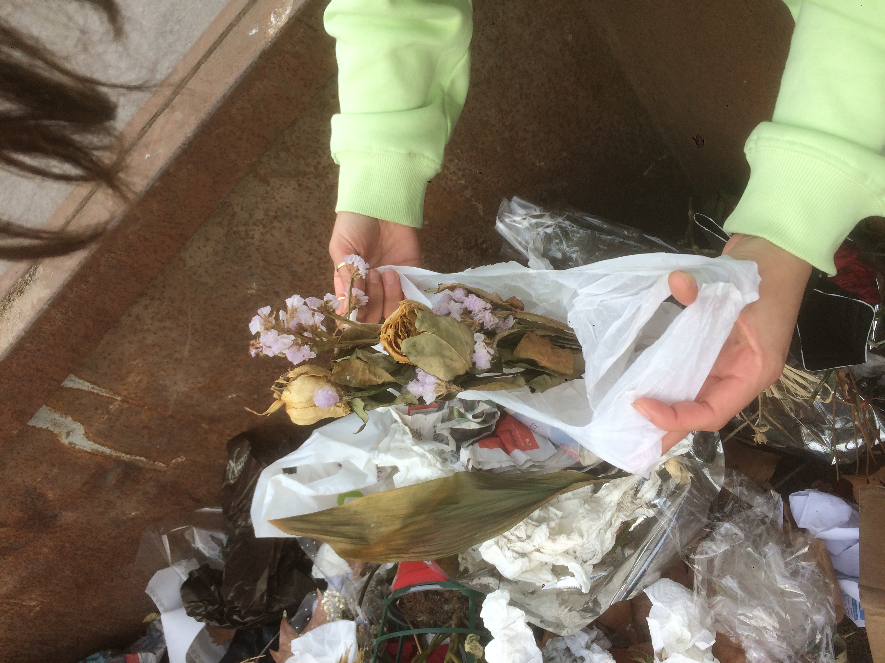 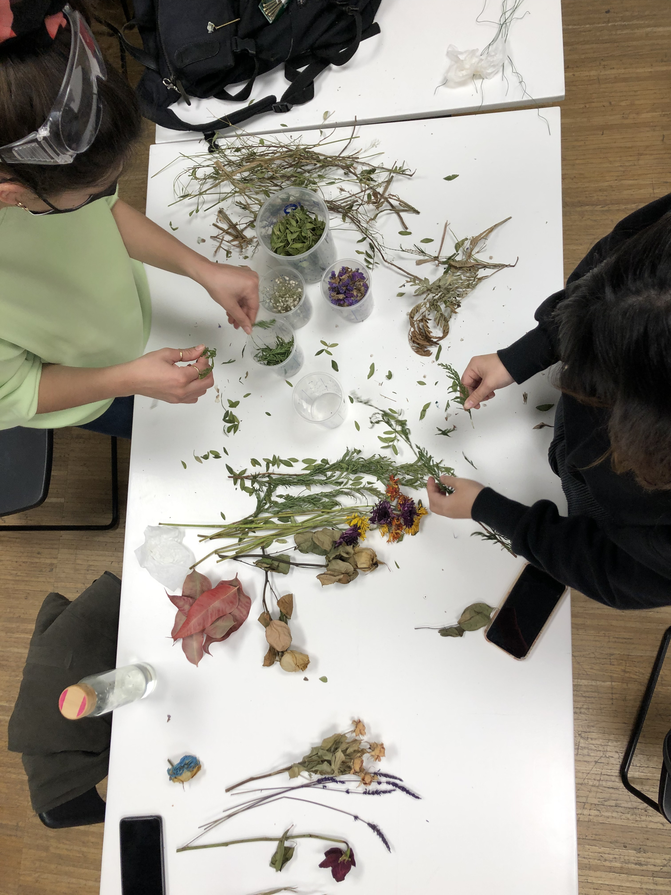 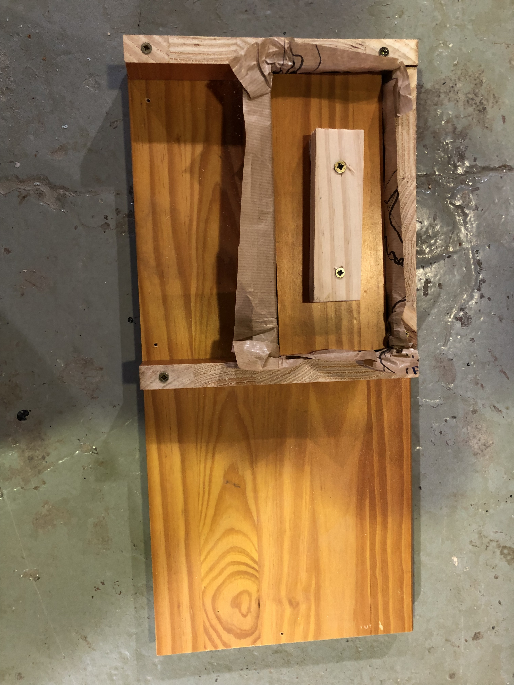
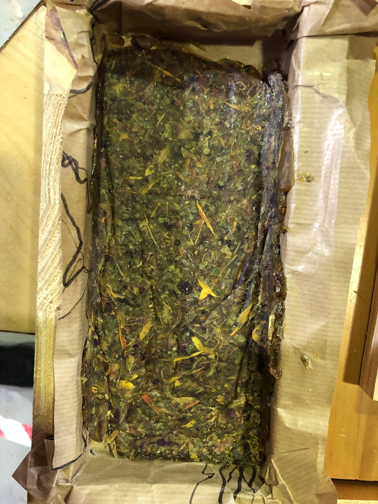
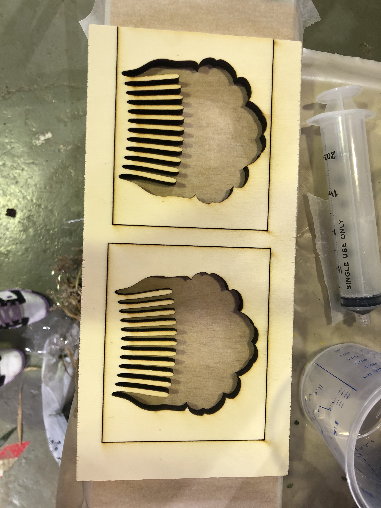
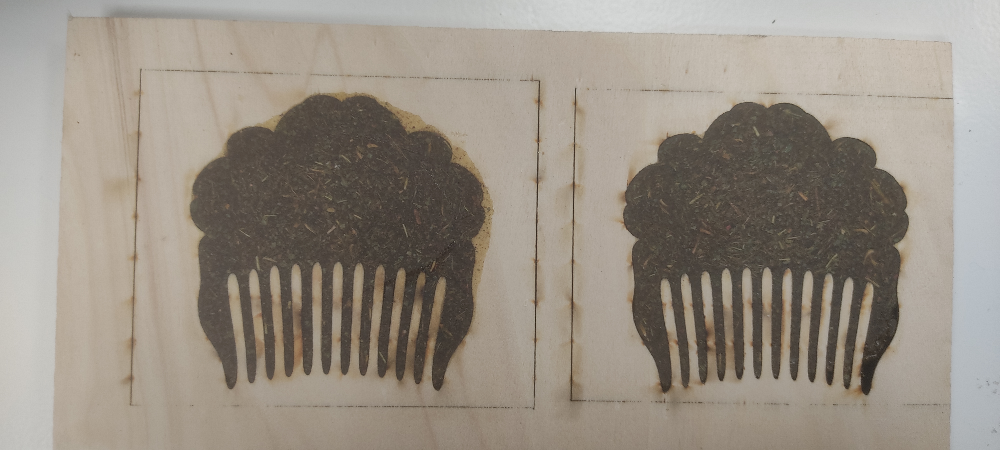
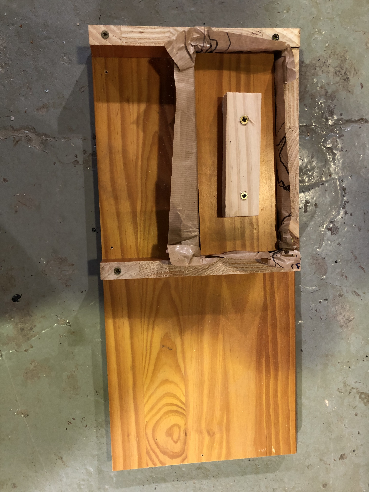
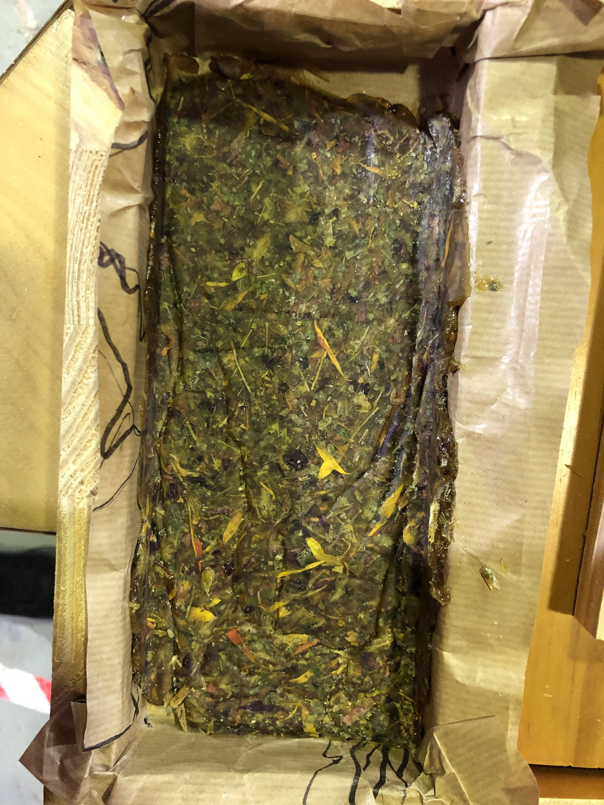
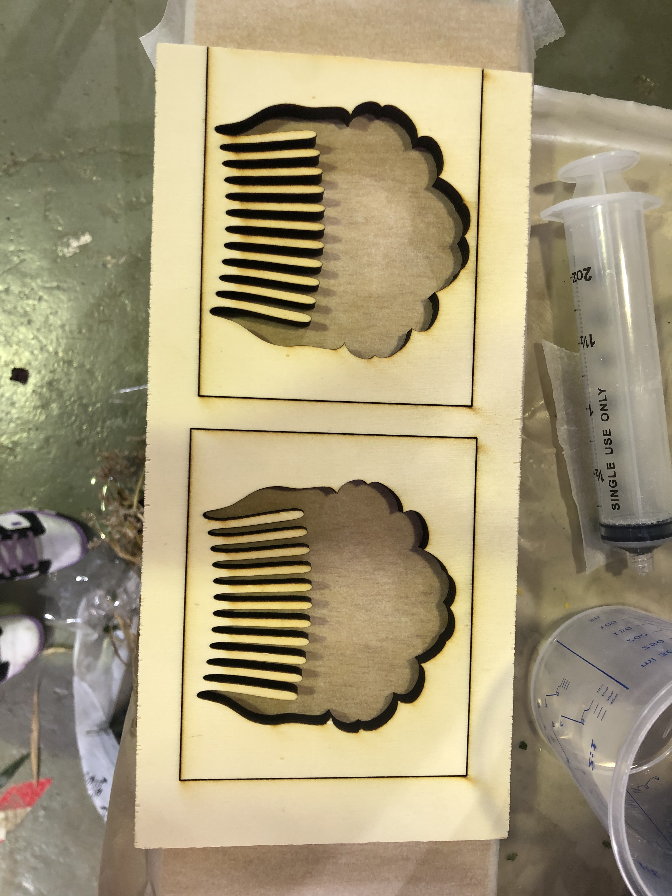
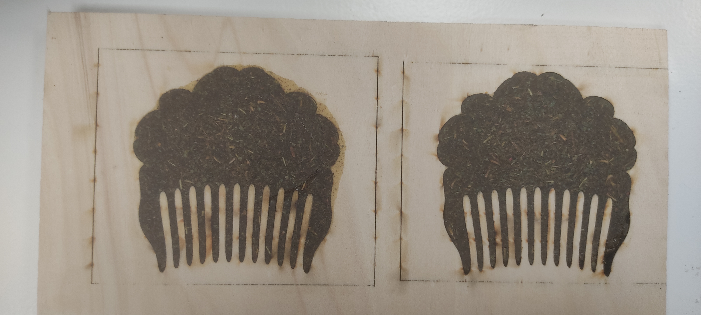
Week 01 Remixing materials.
Week 02 Materials in context.
Waste is something that is linked to the context. We analyse the neighborhood context of Poblenou, we started to walk around and ask a few small businesses to have a general idea of the kind of waste we have around us. Poblenou is a neighborhood where are amount of coffees and restaurants. We asked some questions like what kind of waste? How often? How the business recycles?. We found some opportunities around food waste and flower waste. We decided to focus on coffee grains as a resource and flower waste found at the cemetery in Poblenou.
Looking for projects references, we achieve some new visions around the use of waste. Some questions emerged around the use of the future material: Could be eaten? Could be degradable? Do I want the biomaterial to last forever?...
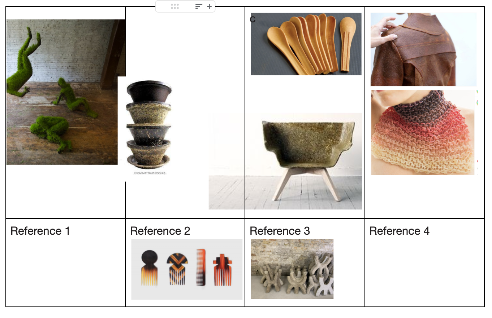 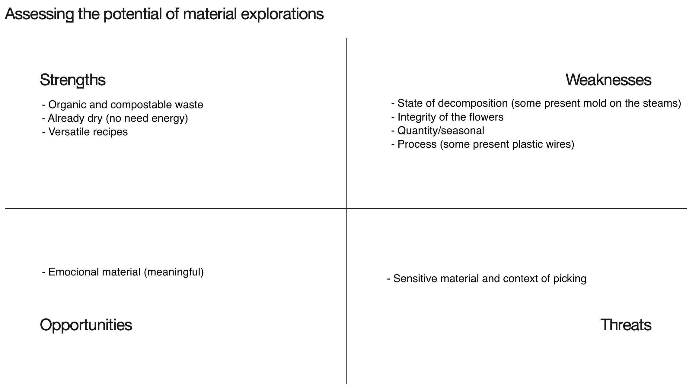After thinking about all of these questions I chose to work with dried flowers from the cemetery as a raw material to develop products that help with the mourning process. Those products, plant-based have to be biodegradables and return at some point to the “earth”. As we had only one week to develop the material I choose pine resin as the binder material. Then I realized that mixing flowers with other materials could be a better option to degrade and better understand the mourning phases. As products where the material can be applied we can find:
The next steps could be researching new ways of mixing the raw material to have new material's properties and meanings.